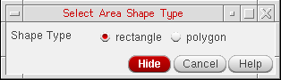

Selecting Objects
You can select objects by drawing a selection shape: rectangle, polygon, or line.
Selecting Objects By Defining an Area
To select objects within an enclosed area by drawing a rectangle or polygon:
-
Choose View – Select – Select By Area.
In Virtuoso Layout Suite XL and higher tiers, you can access the command by choosing Edit – Select – Select By Area. -
Press
F3.
The Select Area Shape Type form appears.
 - Specify the selection shape type as rectangle or polygon.
-
Draw the selected shape around the required objects on the canvas.
Any objects enclosed within the drawn shape are selected. - Optionally, continue to select more shapes by drawing a rectangle or polygon around them.
-
To add objects to the previous selection, press
Shiftand draw the shape around the additional objects to be selected. -
To remove objects from the previous selection, press
Ctrland draw the shape around the objects to be removed from the selected set. -
Press
Escto complete the command.
Selecting Objects by Drawing a Line
To select objects by drawing a line:
-
Select View – Select – Select By Line.
In Virtuoso Layout Suite XL and higher tiers, you can access the command by choosing Edit – Select – Select By Line. - Click at the first point of the line on the canvas.
- Click at the next point of the line.
- Optionally, continue to click to define more points of the line.
-
Double-click to end the line.
Any objects overlapping the line are selected. - Optionally, continue to select more shapes by drawing a line to overlap them.
-
To add objects to the previous selection, press
Shiftand draw a line to overlap the additional objects to be selected. KeepShiftpressed until you double-click on the canvas to end the line. -
To remove objects from the previous selection, press
Ctrland draw a line to overlap the objects to be removed from the selected set. KeepCtrlpressed until you double-click on the canvas to end the line. -
Press
Escto complete the command.
Fully Selecting the Partially Selected Objects
To fully select objects that are partially selected:
-
Select View – Select – Extend selection to object.
In Virtuoso Layout Suite XL and higher tiers, you can access the command by choosing Edit – Select – Extend selection to object. - Select the partially selected object that you want to fully select.
-
Press
Escto complete the command.
Saving Selected Objects as a Selection Set
Use the Save/Restore Selection Set form to save objects selected on the canvas as a selection set so that you can restore them later.
To save selected objects as a selection set:
-
Select View – Select – Save/Restore.
In Virtuoso Layout Suite XL and higher tiers, you can access the command by choosing Edit – Select – Save/Restore. - Enter the name of the selection set in the Name field.
- Click Store.
- Click Close.
To restore a selection set, choose the selection set in the Save/Restore Selection Set form. Click Select and then Close.
Related Topics
Return to top